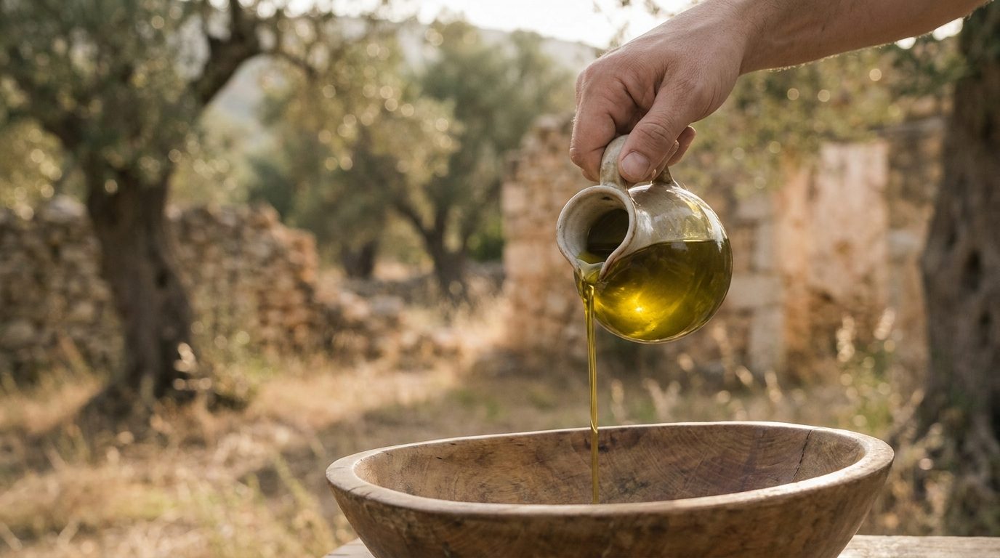

The estate
Held up to the light.
One grove on a south-facing Peloponnesian slope, farmed by one family, harvested by hand in the first days of the season while the fruit is still turning.
Nothing is blended in and nothing is taken out. The oil is milled cold within hours, decanted, and rested only long enough to settle. What reaches the bottle is the grove itself — grassy, peppery, and briefly, seasonally green.
«Λιόκλαδο — το κλαδί της ελιάς, κρατημένο στο φως.»